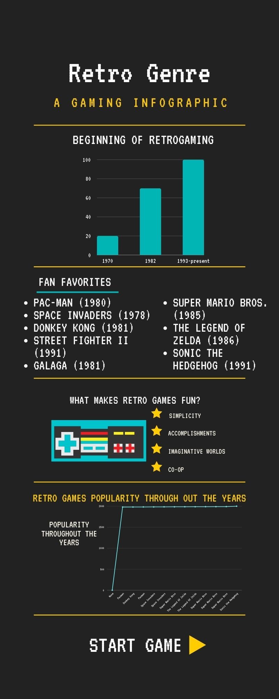

Retro Genre
History.
Retrogaming, also known as classic gaming and old school gaming, is the playing and collection of personal computers, consoles, and video games from earlier decades. Usually, retrogaming is based upon systems that are outmoded or discontinued, although ported retrogaming allows games to be played on modern hardware via ports, emulations or compilations. It is typically for nostalgia, preservation, or authenticity. A new game could be retro styled, such as an RPG with turn-based combat and pixel art in isometric camera perspective, as well as chip-tune styled music.
Retrogaming has existed since the early years of the video game industry, and was popularized with the Internet and emulation technology. It is argued that the main reasons players are drawn to retrogames are nostalgia for different eras, the idea that older games are more innovative and original, and the simplicity of the games.


Infographics.

The history of infographics on retrogaming reflects the evolution of both gaming culture and visual storytelling. In the early 2000s, as nostalgia for classic games grew, infographics began to surface, focusing on the milestones of gaming history. These early designs were simple and functional, using basic charts and timelines to highlight iconic consoles like the NES and Atari 2600 and legendary titles such as Pac-Man and Super Mario Bros.
Games.
Top 3 Retro Games
Devices.
Arcade Classics
Console Retrogaming
Arcade and Console Information.
Arcade and Consoles
Gameplay Mechanics.
In Super Mario Bros. (1985), players control Mario (or Luigi) through side-scrolling levels, using jumping to avoid obstacles, defeat enemies, and reach higher areas. Power-ups like the Super Mushroom, Fire Flower, and Starman grant special abilities. Players collect coins for extra lives and aim to reach the flagpole at the end of each level. The game's mechanics combine simple actions with increasing challenges, laying the foundation for modern platformers.